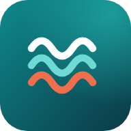

BPS Provinsi Maluku · Fungsi Neraca
Koneksi agak lambat…
Lembur Neraca membutuhkan koneksi internet karena data diambil langsung dari Spreadsheet.
Buka file index.html, lalu isi URL_APLIKASI dengan link Web App Apps Script (berakhiran /exec).